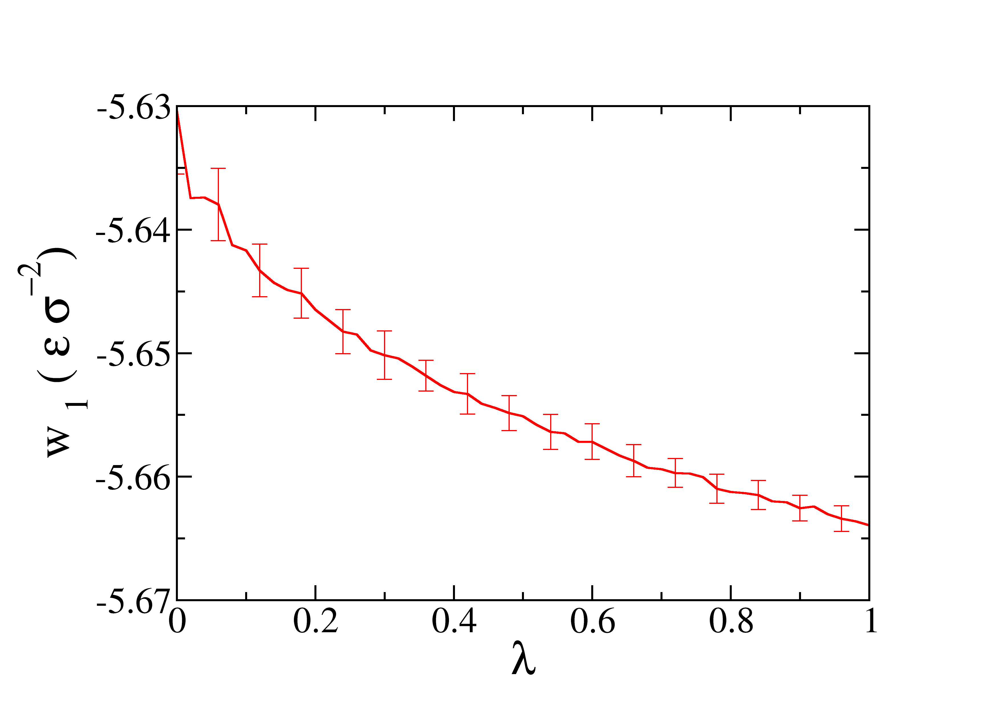

Solid-Vacuum interface of a Lennard-Jones crystal with wells¶
Note
This example requires few hours of computation time on 16 cores to generate a sensible output. However, you can run shorter simulations to acquaintance yourself with the code. To do this, change the input file variables eqnts and nts (equilibration and production number of time steps) to smaller values and/or reduce the number of points to move the walls (Step 1, Step 2 or Step 4) or switch off the interactions (Step 3).
Note
In this section / is the package’s root folder.
In this example we will set up the cleaving calculation for the calculation of the SFE of a Lennard-Jones crystal in contact with vacuum.
The input files for the whole calculations are already given in the directory /examples/lj_SV but in this tutorial we will go through the writing of such files from scratch.
First of all, create a new folder lj_SV and step in it. Copy the folder /example/lj_SV/utils/ in the folder lj_SV just created. The folder /utils/ contains some simple programs and script that will be needed to analyze the results.
Step 1¶
Create a
step1folder and enter it. Create theout/,data/,restart/, anddump/subfolders. Note that you can safely comment out thedumpandrestartlines of the input, since dump and restart files are not needed for the cleaving computation. In this case you don’t need to create therestart/anddump/folders.Prepare the LAMMPS input file. Here we use
/examples/lj_S/bulk.infile as a starting point. Copy it to the current folder, delete all the lines after thef3fix and change the temperature to 0.1variable Tsyst equal 0.1.Prepare the starting configuration. Here we copy the
/examples/lj_systems/fcc111-T01.lmpdata file to the current folder. The file contains the starting configuration, a Lennard-Jones fcc crystal oriented along the direction (111) at the (reduced) temperature of 0.1. Edit thebulk.ininput file so that the correct data file is read (i.e. change theread_data fcc111-T1.lmpline toread_data fcc111-T01.lmp).Prepare a wells file. Here we will use the
/examples/lj_systems/fcc111-T01-wells.lmpfile, which should be copied to the current folder. The exact format of this file is given in the description of the appropriate fix.Prepare a file containing the variation of the strength of the wells. This file contains a sequence of increasing consecutive numbers in the interval \([0,1]\) (extremes included). Here is a (truncated) example:
0.0
0.001
0.002
0.05
0.1
...
0.998
0.999
1.0
Note:
The file must start at 0 and end at 1.
There is no internal control in the code that checks that the boundaries are correct
Here we will be using the /examples/lj_SV/step1/lambda_wells.dat file, so make sure to copy it to the current folder.
The wells in the system are introduced using the new fix
wellPforce:
fix f2 all wellPforce ${dw} ${rw} ${expp} ${lambda} file fcc111-T01-wells.lmp
where the explanation of the different parameters is given in the description of the fix. In the wells version of the cleaving model, the wells are introduced by switching the parameter lambda from 0 (no interactions between atoms and wells) and 1 (full interactions between atoms and wells). LAMMPS allows the creation of an input file which can perform several runs in a row by changing the parameter between the different runs. The relevant code that should be added to bulk.in is
variable Nevery equal 100
variable Nrepeat equal 5
variable Nfreq equal 500
variable lam file lambda_wells.dat
variable i equal 1
variable dw equal 6.0
variable a0 equal exp(1/3*ln(4/1.05604))
variable rw equal sqrt(2)*${a0}/4.0*1.2
variable expp equal 3.0
label here
variable lambda equal ${lam}
fix f2 all wellPforce ${dw} ${rw} ${expp} ${lambda} file fcc111-T01-wells.lmp
print "Well depth ${lambda}"
run ${eqnts}
fix f5 all ave/time ${Nevery} ${Nrepeat} ${Nfreq} c_thermo_temp c_thermo_pe f_f2 v_lambda file out/ave.F.${i}.out
run ${nts}
unfix f5
unfix f2
write_data data/Fstep1.${i}.data nocoeff
variable ii equal ${i}+1
variable i equal ${ii}
next lam
jump SELF here
To keep the main directory clean from all the output files generated during the run, we print those files in the out and data folders.
We refer to the LAMMPS documentation for the use of the jump command to create a loop. Each iteration of the loop produces the following files:
Fstep1.${i}.data: data file containing the last configuration of the i-th iterationave.F.${i}.out: File which contains a summary of the properties of the system, including the work (f_f2)
Launch the simulation.
Step 2¶
This step for this particular system (a crystal in coexistence with vacuum) is empty, so we can directly go to Step 3.
Step 3¶

In the third step we switch off the interactions between the two sides of the cleaving wall.
Create the
step3folder and enter it. Create theout/,data/,dat/,restart/, anddump/subfolders (where the latter two can be omitted if the related commands in the LAMMPS script file are commented). Thedat/folder will contain the output of this step.Copy
fcc111-T01-wells.lmpand the lastdata/Fstep1.*.datafile from the Step 1 folder.Prepare a new LAMMPS input file. We again use the
/examples/lj_S/bulk.infile as a starting point. Copy it to the current folder, delete all the lines after thef3fix and change the temperature to 0.1variable Tsyst equal 0.1and change the name of the data file to match the file copied in sub-step 2.The switching off is implemented directly in the definition of the pair interactions. We therefore need to change the pair interaction in the LAMMPS script file (section Interactions) to the new defined type
pair_style lj/BGcleavpbc ${cutoff1} ${cutoff2} z
All the parameters (cutoff1, cutoff2, epsilon, sigma) are identical to those used in Step 1. Note that there is a third parameter in this pair_style, the direction normal to the cleaving plane, which is z in this case.
Add the command for the wells, together with the definition of the variables that sets the parameters specifying the wells characteristics:
variable dw equal 6.0
variable a0 equal exp(1/3*ln(4/1.05604))
variable rw equal sqrt(2)*${a0}/4.0*1.2
variable expp equal 3.0
fix f2 all wellPforce ${dw} ${rw} ${expp} 1.0 file fcc111-T01-wells.lmp
In this step the strenght of the wells remains constant, therefore we replace ${lambda} with 1.
Create a file (called
zdir.dat) for the switching off of the interactions across the cleaving plane (or copy/examples/LJ_SV/step3/zdir.dat). The file should contain a list of values that specify how much the box will be moved away from its periodic images along the normal to the cleaving plane (zin our case). The file must start with zero, which is the first point of the switching. Here is an example:
0.0
0.001
0.002
0.05
0.1
...
2.0
2.2
2.4
2.8
3.2
...
Note: the upper boundary should be large enough so that, when the box has moved this much, there are no more interactions between the box and its periodic images. A value of 2.6 is usually enough.
The work needed to switch off the interactions (described in the next point) is calculated by adding the line
compute 1 all cleavpairs lj/BGcleavpbc norm 2 zto end of the LAMMPS script file. The meaning of the parameters is reported in the description of this compute style.The actual switching off is obtained through another loop which increases the size of the box. Since the atoms are kept in place by the cleaving potential, increasing the size of the box creates a vacuum space. When the vacuum space is larger than
cutoff2than the box and its image across the cleaving wall do not interact anymore. Add the following loop to the end of the LAMMPS script file:
variable Nevery equal 100
variable Nrepeat equal 5
variable Nfreq equal 500
variable initzhi equal $(zhi)
variable initzlo equal $(zlo)
variable zc file zdir.dat
variable i equal 1
label here
variable dhi equal ${zc}
variable newzhi equal ${dhi}+${initzhi}
variable newzlo equal ${initzlo}
print "Forward Interaction ${i}: ${zc} "
print " ${initzhi} ${dhi} zhi "
change_box all z final ${newzlo} ${newzhi}
print "B ${initzhi} ${dhi} zhi "
run ${eqnts}
fix f6 all ave/time ${Nevery} ${Nrepeat} ${Nfreq} c_1[*] file dat/inters3.${i}.dat mode vector
fix f7 all ave/time ${Nevery} ${Nrepeat} ${Nfreq} c_thermo_temp c_thermo_pe f_f2 v_dhi file out/ave.F.${i}.out
run ${nts}
unfix f6
unfix f7
write_data data/Fstep3.${i}.data nocoeff
variable ii equal ${i}+1
variable i equal ${ii}
next zc
jump SELF here
We refer to the LAMMPS documentation for the exact explanation of the change_box command.
Launch the simulation.
Step 4¶
In the last step we remove the wells leaving free the newly created interfaces.
Create the
step4folder and enter it. Create theout/,data/,restart/, anddump/subfolders (where the latter two can be omitted if the related commands in the LAMMPS script file are commented). Theout/folder will contain the output of this step.Copy
fcc111-T01-wells.lmpand the lastdata/Fstep3.*.datafile from the Step 3 folder.Prepare a new LAMMPS input file. We again use the
/examples/lj_S/bulk.infile as a starting point. Copy it to the current folder, delete all the lines after thef3fix and change the temperature to 0.1variable Tsyst equal 0.1and change the name of the data file to match the file copied in sub-step 2.Prepare a file containing the variation of the strength of the wells. This file contains a sequence of increasing consecutive numbers in the interval \([0,1]\) (extremes included). Here is a (truncated) example:
1.0
0.99
0.98
...
0.02
0.01
0.0
Note:
The file must start at 1 and end at 0.
There is no internal control in the code that checks that the boundaries are correct.
The values does not need to be the same (in reverse order) of those used in Step 1.
Here we will be using the /examples/lj_SV/step4/rev_lambda_wells.dat file, so make sure to copy it to the current folder.
variable Nevery equal 100
variable Nrepeat equal 5
variable Nfreq equal 500
variable lam file rev_lambda_wells.dat
variable dw equal 6.0
variable a0 equal exp(1/3*ln(4/1.05604))
variable rw equal sqrt(2)*${a0}/4.0*1.2
variable expp equal 3.0
variable i equal 1
label here
variable lambda equal ${lam}
fix f2 all wellPforce ${dw} ${rw} ${expp} ${lambda} file fcc111-T01-wells.lmp
variable totW equal "f_f2"
print "Well depth ${lambda}"
run ${eqnts}
fix f6 all ave/time ${Nevery} ${Nrepeat} ${Nfreq} c_thermo_temp c_thermo_pe v_totW v_lambda f_f2 file out/ave.F.$i.out
run ${nts}
unfix f2
unfix f6
write_data data/Fstep4.$i.data nocoeff
variable ii equal $i+1
variable i equal ${ii}
next lam
jump SELF here
Launch the simulation.
Calculation of the SFE¶
The SFE is obtained by summing the work performed in the Step 1, Step 3, Step 4. The work is calculated by using the results produced in each step. The folder /utils/ contains some small programs for the post-processing.
work.sh: bash script to calculate the average of the relevant properties for each step of the thermodynamic integrationc3cryst.f90: fortran program to extract the value of the interactions calculated in Step 3. It must be compiled by running the commandgfortran c3cryst.f90from within the/utils/foldercalcSFE.m: Matlab script to perform the integration of each curve
Before analyzing the calculations, let’s create a folder ‘/results/’ at the same level of the folders ./step1/, ./step3, ./step4. Here, we will copy the results for each step.
The files
.outgenerated in Step 1 contains the quantityf_f2, which is the work performed. An average of that quantity for each lambda gives the variation of the energy in Step1. The integration of the results quantity over lambda gives the total work in Step 1. In order to calculate the work performed in Step 1:Enter in the dir
./step1/out/Call the script
../../utils/work.sh FCopy the file
F-work.datin the folder./results/by changing its name tostep1_work.dat
The profile of the work obtained as function of \(\lambda\) is represented in the next figure. 
The files
.datgenerated in Step 3 contains the interactions switched-off during the Step 3. By averaging these values for each value of zw we obtain the variation of the energy, and the integration of the results over zw gives the total work done in Step 3.
In order to calculate the work performed in Step 3:
1. Enter in the dir `./step3/out/`
2. Call the program `../../utils/a.out`
3. Call the script `../../utils/work.sh F`
4. Copy the file `F-work.dat` in the folder `./results/` by changing its name to `step3_work.dat`
The profile of the work obtained as function of \(z\) is represented in the next figure.

The profile of the work obtained as function of \(\lambda\) is represented in the next figure.

After the profile of the work in the three steps is obtained, we can calculate the SFE by integrating the three curves. Enter in the dir
/results, copy the Matlab script/utils/calcSFE.mand run it in Matlab from this folder. The final value of the SFE is: \(2.095\pm 0.007\) in units of \(\epsilon\sigma^{-2}\)